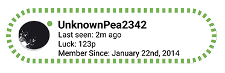
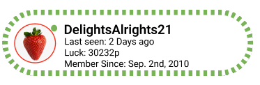
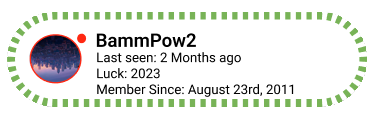

“let your child bond and learn from you, not tiktok”

I wanted to share something that really got me thinking the other day. I was at a restaurant, and I walked past a family sitting at a table. The parents were on their phones, and the kids were all engrossed in their own devices. Meanwhile, the baby at the table was crying, clearly trying to get their attention. It struck me how disconnected they all seemed, and it made me reflect on how often we use screens to occupy our kids instead of really engaging with them. I think we’re missing out on crucial bonding that...
“Seasonal Thanks Challenge *LUCK op*”

I hope you're all doing well! If none of you know me I am the lead admin of ‘Group 3’ and I wanted to propose a challenge that I believe could not only make a real difference in our local communities but also create deeper connections between us as individuals.
In these times, it's easy to get caught up in the rush of daily life, holidays, personal work and forgetting the power of small acts of kindness and service. So, I challenge each of you to volunteer at a local soup kitchen, open kitchen, or food pantry in your community. Whether you’re serving meals, prepping food, or simply offering a kind word, you have the chance to directly impact someone’s day. Many individuals and families face food insecurity. By volunteering, you’re helping ensure that people have access to a warm meal, a basic human need that can make all the difference in someone’s life. I guarantee, you will walk out of this challenge feeling like a new person and a sense of humanity and gratitude for what you have and what you have been able to provide to those in need. Taking part in this challenge will be noted by all of our admin members in ‘Group 3’, Luck and position advancement in ‘Group 3’ Take the opportunity to talk to those you’re serving, as well as fellow volunteers. Share stories, build relationships, and feel the impact of coming together for a greater cause.
“Observations of people watching for an hour a day”

I spent an hour in the heart of NYC today, just people-watching, and I couldn’t help but think about how much this city pulses with life in such an organic way. I sat on a bench in Washington Square Park, and the stories unfolding around me were fascinating. There was a street musician playing soulful jazz, a couple arguing over directions, and a little girl chasing pigeons with pure joy. Each person seemed to have their own world, but they all collided here in this one moment. What struck most...